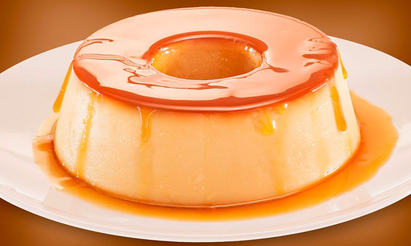

:
Receita de Pudim

Ingredientes
1 lata de leite condensado
3 ovos
1 litro de leite
1 xicara de açucar
Modo de preparo
Transforme o açucar em calda
Forre uma tigela com o caldo
Bata os ingredientes no liquificador
Asse em banho maria por 90 minutos